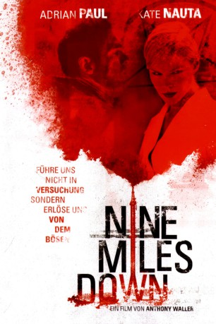

#8767 In der Tiefe wartet der Tod
Alternativ: Nine Miles Down
 
 IMDB-Wertung: 5.5 / 10
IMDB-Wertung: 5.5 / 10  Metascore: 0
Metascore: 0 
Irgendwo in der marokkanischen Wüste peitscht ein mörderischer Sandsturm durch eine Bohrstation. Drei Tage zuvor brach abrupt der Kontakt mit der Anlage ab, seitdem gibt es kein Lebenszeichen mehr von dort. Der Sicherheitsbeamte Jack begibt sich zur Station, um herauszufinden, was geschehen ist, und findet verlassene Räume, unheilvolle Kritzeleien an den Wänden und Überreste satanischer Rituale vor. Als plötzlich eine wunderschöne junge Frau vor ihm steht, beginnt er, an seinem Verstand zu zweifeln.
Jahr: 2009
Dauer: 82 Minuten
FSK: 16
Land: England Studio: SquareOne EntertainmentTonspuren: DD5.1 - ,
Untertitel:
Auflösung: 1080p (1920x816) Größe: 3133 MB
Genre: Thriller, Horror, Sci-Fi, Mystery
Regisseur: Anthony Waller
Drehbuch: Everett De Roche
Soundtrack: Andrew Fisher, Stephen W. Parsons
Darsteller:
 Adrian Paul als Thomas 'Jack' Jackman
Adrian Paul als Thomas 'Jack' Jackman- Amanda Douge als Kat
- Anthony Waller als Professor Borman
- Kate Nauta als JC
- Arcadiy Golubovich als Alex
- Meredith Ostrom als Susan
- Caroline Couret-Delegue als Journalist
- Bruno Andreis als Scientist
- Pierre Cognet als Scientist
- Thierry Goron als Scientist
- Adel Kallel als Scientist
- Attila Szûcs als Scientist
- Nicholas Waller als Scientist
- David Story als Dr. Varga
- Andrew Ryback als Chief Caswell
- Yousef Amin als Yousef
- Madelaine Dixon als Anna
- Brandon Dallmann als Ben
- Jutta Kleinschmidt als Helicopter Pilot Rescuer
- Adrian Lukis als Dr. Leonard
- Hafiene Ahmad als Inspector Khaled
- David Collard als David
- Clelie Saint-Val als Old Woman in Hospital
- Wajden Turki als Nurse
Datei: X:\2009(G-M)\In der Tiefe wartet der Tod (2009, FSK16, 1920x816).mkv seit 27.04.2018
Festplatte: HD 2009(G-Z)-2010(A-F)
 Es gibt insgesamt 82 Filme in der Gruppe '2009(G-M)'
Es gibt insgesamt 82 Filme in der Gruppe '2009(G-M)'